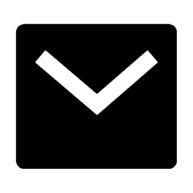
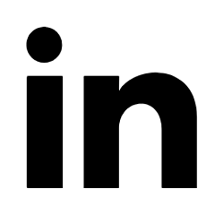

About Us
"Our core mission is to democratise technical knowledge,
prioritizing inclusive skill development.
Specializing in affordable and human-centric drone technology, we drive global expansion
through
innovative,high-quality technology education "

India’s Most Dependable Drone Startup
- • Provide expert-level education and training to educational institutions in India.
- • Focus on drone design, maintenance, and repair as key components of the training program.
- • Conduct testing, repair, and maintenance services to ensure practical application of skills
- • Specialize in the design and assembly of cost-effective drones for agriculture,videography,andsurveillance applications, contributing to India's technological progress in these sectors.

Vision
Empowering the Future of Agriculture Through Innovative Drone Solutions
Mission
To be a leading provider of comprehensive drone services, focusing on education, testing and
repair, as well
as the design and assembly of cost-effective agricultural drones.
Objective
Educational Empowerment:
Provide specialized training programs to educational
institutions, equipping students with the skills and
knowledge needed for drone technology in agriculture.Foster a culture of innovation and
sustainability through educational partnerships and workshops.
Testing and Repair Services:
Offer reliable and efficient testing services for
drones, ensuring optimal performance and compliance with
industry standards.
Establish a state-of-the-art repair facility to address the maintenance and repair needs
of drones, minimizing
downtime for agricultural operations.
Design and Assembly of Cost-Effective Drones:
Innovate and develop cost-effective drone solutions
tailored specifically for agricultural applications.
Collaborate with research and development teams to stay at the forefront of drone
technology, incorporating
advancements to enhance efficiency and effectiveness
...
Sustainable Agriculture Integration:
Promote the use of drones for precision agriculture,emphasizing sustainable and environmentally friendly practices.Advocate for the adoption of drone technology to optimize resource use, reduce environmental impact, and increase overall agricultural productivity.
Community Engagement:
Actively engage with local communities to raise
awareness about the benefits of drone technology in
agriculture.
Facilitate outreach programs to demonstrate the positive impact of drones on farming
practices and rural
economies.
Partnerships and Collaboration:
Establish strategic partnerships with educational
institutions, government agencies, and industry stakeholders
to create a collaborative ecosystem.
Work closely with farmers, agritech companies, and other stakeholders to co-create
solutions that address
specific agricultural challenges.
Continuous Improvement:
Implement a continuous improvement mindset,
regularly updating training programs, testing protocols, and drone
designs to stay ahead in the rapidly evolving field of drone technology.
Read more
Sumit Singh
Founder & CEO
I have completed my B. Tech and M.Tech, and I am currently pursuing a Ph.D. at MMMUT Gorakhpur. Under my
leadership, Pushpak Drone Viman has achieved significant milestones. I have had the privilege of showcasing
the innovative applications of our drone technology to the Honourable Chief Minister, Shri Yogi Adityanath,
and UP Governor, Anandiben Patel. This experience is a matter of pride for me, and it provides an
opportunity to contribute further to our mission.


Dharmendra Singh
Co-Founder & CIO
I have completed my B. Tech and M.Tech, and I am currently pursuing a Ph.D. at MMMUT Gorakhpur. Under my
leadership, Pushpak Drone Viman has achieved significant milestones. I have had the privilege of showcasing
the innovative applications of our drone technology to the Honourable Chief Minister, Shri Yogi Adityanath,
and UP Governor, Anandiben Patel. This experience is a matter of pride for me, and it provides an
opportunity to contribute further to our mission.
Our Mentor

Prof. Sanjay Kumar Soni
Chief Advisor
Dr. Sanjay Kumar Soni is a distinguished Professor in the Electronics and Communication
Engineering Department at Madan Mohan Malaviya University of Technology, Gorakhpur, holding a Ph.D.
from IIT Kharagpur. His extensive ...academic background includes 43 publications in SCI-indexed
journals and 42 international conference presentations. Leading sponsored projects, such as the
"Development of IoT and Drone-based Agriculture Monitoring System," funded by the Ministry
of Electronics and Information Technology (MeiTY), Government of India, New Delhi, emphasize
skill development for socially deprived communities. Serving as Chief Investigator, Dr. Soni
demonstrates a commitment to research and innovation. His advisory role in the Pushpak Drone Viman
project and interest in motivational speaking further showcase his contributions to academia and
technology's societal impact.
Read more